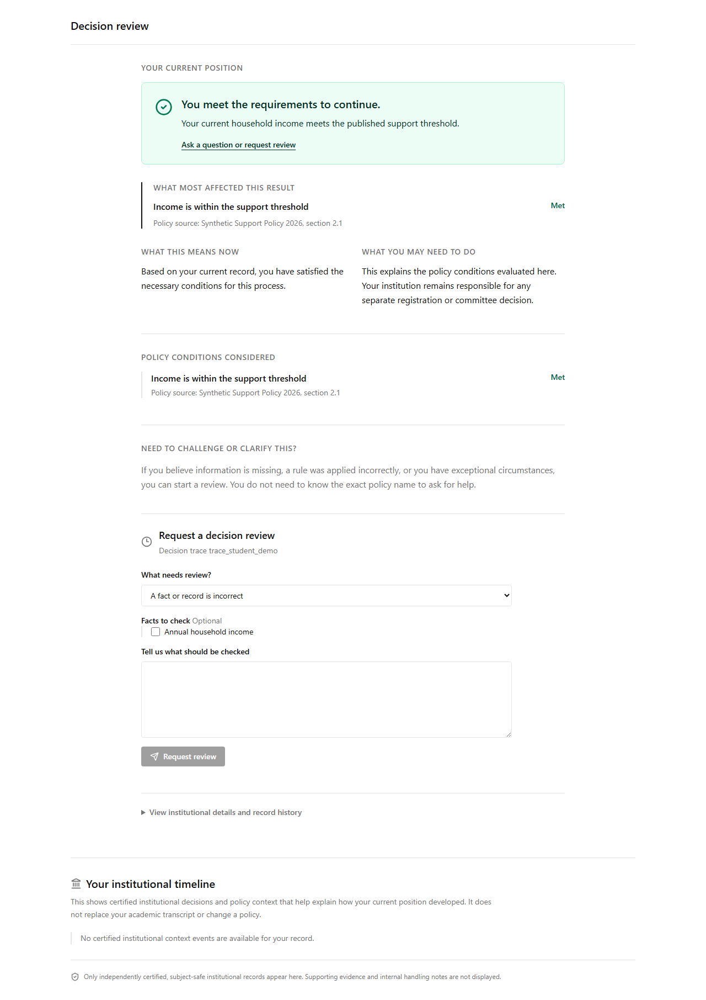

Core technology
Institutional Reasoning Engine
A governed method for connecting approved policy, accepted evidence and a traceable explanation.
Institutional reasoning infrastructure
Cacisa helps institutions show how an approved policy, the available evidence, and a governing rule release lead to a decision.
Cacisa does not replace institutional judgment. Institutions remain responsible for their policies, evidence, exceptions, and final decisions.
Cacisa Systems
Cacisa Systems is building institutional reasoning infrastructure. Higher education is where the work begins, not the limit of what the underlying method can eventually support.
Core technology
A governed method for connecting approved policy, accepted evidence and a traceable explanation.
First domain
Curriculum, progression, academic standing, concessions, funding and graduation questions.
Implementation
Formalisation, governance, integration, validation and support with institutional decision owners.
Public-interest programme
Research and public work on institutional intelligibility, agency and accountable technology.
The problem
Rules may be online, but the people governed by them are still often left to assemble a decision from handbooks, emails, systems, deadlines, and institutional memory. Cacisa provides the reasoning layer between a policy and an understandable institutional position.
The core technology
Rules are reviewed, versioned, signed, and tied to an effective date.
Evidence becomes a usable fact only through a governed, attributable process.
The same accepted facts and policy release produce the same traceable result.
People can see the rule, the relevant information, uncertainty, and the next route for help.
What the proof of concept has shown
Governed policy publication: a draft can be blocked from self-approval, approved independently, compiled and signed.
Deterministic reasoning: the same accepted facts and governing release return the same explanation-bearing result.
Domain neutrality: the evaluator has been exercised for curriculum and grant scenarios without changing the engine.
Honest boundary: this is not evidence of a live institutional deployment, real-system integration or completed pilot.

Illustrative synthetic data. This is not a student record or institutional decision.
The first implementation domain
Cacisa begins where many students encounter institutional complexity most sharply: curriculum requirements, prerequisite rules, progression, academic standing, concessions, bursaries, and graduation readiness.
The goal is not to make an institution less rigorous. It is to make the route through institutional rules easier to understand early enough to act.
See what an explanation can containInstitutional implementation
Implementation is a shared, disciplined process. Cacisa builds the infrastructure; the institution retains authority over the policy and its interpretation.
Cacisa Systems
The institution
The governed person
Trust by design
Governed releases
Policy drafts, approvals, effective dates, and signed releases are distinct.
Visible uncertainty
A provisional source or incomplete record is named, rather than silently treated as fact.
Review routes
An explanation can point to the next human route instead of pretending that every case is resolved automatically.
Traceability
A result is tied to the relevant policy release and accepted factual position.
From Opacity to Legibility
Cacisa publishes work on institutional intelligibility, student agency, accountable technology, policy implementation, and the conditions under which people can understand the decisions that govern them.
Research participation, institutional pilot evaluation, and identifiable personal data are never collected through this public site.
Discuss research or a public conversationFor institutions and partners
We begin by identifying one policy area, its authoritative sources, its decision owners, and the people who need a clearer explanation.
hello@cacisa.systems